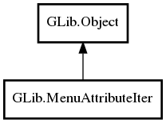

GLib.MenuAttributeIter Reference Manual
Packages
gio-2.0
GLib
MenuAttributeIter
MenuAttributeIter
get_name
get_next
get_value
next
MenuAttributeIter
Object Hierarchy:

Description:
public
abstract
class
MenuAttributeIter
:
Object
Namespace:
GLib
Package:
gio-2.0
Content:
Creation methods:
protected
MenuAttributeIter
()
Methods:
public
unowned
string
get_name
()
public
virtual
bool
get_next
(
string
out_type,
out
Variant
value)
public
Variant
get_value
()
public
bool
next
()